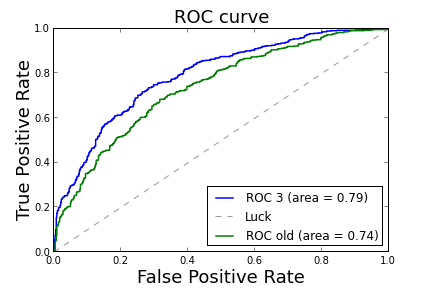

Dünya Kupası 2014, Veri Analizi
Daha önceki maç verisine bakarak 2014 Dünya Kupası maçlarını tahmin
edebilen istatistik (yapay öğrenim) teknikleri Google mühendisleri
tarafından paylaşıldı, kullanılan teknik lojistik regresyon. Verinin
şekillendirilmesi, veriden özellik (feature) yaratmak işin püf
noktalarından - veri hangi detay seviyesinde (maç seviyesinde mi takım
seviyesinde mi) ve hangi kolonlar üzerinden modele dahil edilecek?
Görülüyor ki nihai regresyon her maç için iki takımı yanyana koyuyor
(A takımı öğeleri belli kolonlar B öğeleri belli kolonlar) ve 1,0
etiketini tahmine uğraşıyor. Öğelerin önemli bir özelliği o ana kadar
her iki takımın oynadığı önceki N maçın özeti olmaları. Yani A takımı
son 3 maçta (N=3) maçta dakikada 5 pas atmışsa passes öğesi 5
olacaktır, B takımı dakikada 10 atmışsa op_passes 10
olacaktır. Böylece lojistik regresyona 5'e karşı 10 pas ağırlığı olan
bir veri satırı hakkında irdeleme yapma imkanı veriyoruz; ve bilinen
etikete göre LR gerekli ağırlıkları hesaplayarak sonuca erişiyor.
Projede kullanılan 4 Python dosyası var:
match_stats: Maç istatistiklerini yükleyen kodlar.
features: Ham istatistik verileri özelliklere (features) döndürüyor,
ki bu özellikler yapay öğrenim modeline girilebilsin. Bu özellikler önceki
K maçın verilerini özetleme amaçlı yaratıldılar, ki bu özelliklere
dayanarak bir sonraki maçı tahmnin edebilelim.
world_cup: Veriyi temizlemek ve modeli kurmak için kullanılan
yardımcı kodlar.
power: Birbiriyle belli sayıda maç yapmış takımların bir ``güç
sıralamasını'' hesaplamak.
Özellik inşası
Sonraki maç tahmini için önceki K maçın özet istatistiklerine bakıyoruz, K'nın
ne olduğu history_size ile tanımlı.
import world_cup
import features
import match_stats
import pandas as pd
history_size = 3
game_summaries = features.get_game_summaries()
data = features.get_features(history_size)
Bu özellikler, dediğimiz gibi, önceki K maçın özeti. Bu özetlerin çoğu bir ortalamadır, ayrıca bu ortalamaların çoğu dakika bazlı çünkü maç zamanını aşan maçları da hesaba katmak için.. Eğer maç başına yapılan pas değeri alınsaydı, o zaman vakti aşan bir maçta o değer normalden çok daha fazla olacaktı, bu modeli bozardı.
Modelde kullanılacak özellikler:
is_home: Takım evinde mi, deplasmanda mı oynuyor. Futbolda bu
değişkenin çok önemli olduğunu biliyoruz.
avg_points: Önceki K maçta kazanılan ortalama puan (galibiyet için
3, eşitlik için 1, kayıp için 0).
avg_goals: Önceki K maçta atılan averaj gol.
op_average_goals: Rakip tarafından son K maçta atılan averaj gol.
pass_70/80: Hücum sahasının 30%-20%'sinde dakika başına verilen
başarılı pas.
op_pass70/80: Hücum sahasının 30%-20%'sinde rakip tarafından
verilmiş dakika bazında başarılı paslar.
expected_goals: Son K maçtaki gol beklentisi, ki bu beklenti atılan
şut ve ve şutun kaleden uzaklığı baz alınarak hesaplanan bir sayı.
passes: Dakika başına atılan paslar.
bad_passes: Dakika bazında verilen ama başarılı olmayan paslar.
pass_ratio: Başarılı pasların oranı.
corners: Dakika bazında atılan kornerler.
fouls: Yapılan faul sayısı (dk bazlı)
cards: Kırmızı ya da sarı alınan kart ceza sayısı (maç başına).
shots: Dakika bazında atılan şut.
op_*: Rakipler hakkındaki bazı tarihi istatistikler. Dikkat, bu
`rakip''opteamnamede gösterilen rakip değil, genel olarak bu
takımın rakiplerinin ona karşı nasıl oynadığını göstermeye çalışan bir
istatistik. Meselaop_corners` bu takımın rakiplerinin dakika başına
kaç korner kazandığını gösteriyor.
*_op_ratio: Takimin istatistiklerinin rakiplerine olan orani [?]
Ozellik olmayan kolonlar
matchid: Maçın id'si
teamid: Takımın id'si
op_teamid: Rakip takımın özgün id'si
team_name: Takımın ismi
op_team_name: Rakip takımın ismi
timestamp: Maç ne zaman oynandı
competitionid: Genel müsabakayı gösteren kod (dünya kupası, vs).
Hedef kolonlar:
Alttaki kolonlar tahmin edilmeye uğraşılabilecek olan kolonlar. Eğer bilinen veri üzerinde tahmin yapmak istiyorsak, bu kolonları tahmin öncesi dışarı atmalıyız, bunu unutmayalım. Birkaç hedef kolon var ama, biz sadece kazanılan puanı tahmin etmeye uğraşacağız, belki diğer modeller diğer kolonları tahmin etmeye uğraşırlar, mesela atılan gol sayısı gibi.
points: Maçın puan sonucu.
goals: teamid deki takımın attığı gol sayısı.
op_goals: op_teamid ile gösterilen takımın attığı gol sayısı.
club_data = data[data['competitionid'] <> 4]
# Show the features latest game in competition id 4, which is the world cup.
print data[data['competitionid'] == 4].iloc[0]
matchid 731828
teamid 366
op_teamid 632
competitionid 4
seasonid 2013
is_home 0
team_name Netherlands
op_team_name Argentina
timestamp 2014-07-09 21:00:00.000000
goals 0
op_goals 0
points 1
avg_points 2.33333
avg_goals 1.33333
op_avg_goals 0.333333
pass_70 0.472036
pass_80 0.150698
op_pass_70 0.26478
op_pass_80 0.078501
expected_goals 1.44437
op_expected_goals 0.411425
passes 3.83486
bad_passes 1.01362
pass_ratio 0.765595
corners 0.0709912
fouls 0.126237
cards 1
shots 0.155226
op_passes 3.38986
op_bad_passes 1.02455
op_corners 0.0346796
op_fouls 0.157066
op_cards 2.66667
op_shots 0.0924966
goals_op_ratio 1.33333
shots_op_ratio 1.70227
pass_op_ratio 1.02543
Name: 0, dtype: object
Maç bazında atılan goller ve maçın sonucunu eksenlere alarak bir tablo yaratalım (crosstab).
import pandas as pd
print pd.crosstab(
club_data['goals'],
club_data.replace(
{'points': {
0: 'lose', 1: 'tie', 3: 'win'}})['points'])
points lose tie win
goals
0 768 279 0
1 508 416 334
2 134 218 531
3 23 42 325
4 2 6 158
5 0 2 67
6 0 0 13
7 0 0 6
8 0 0 1
5'den fazla gol atmak tabii ki kazanmayı garantiliyor, hiç atmamak 75\% ihtimalle kaybedilecek demektir (bazen de beraberlik olur tabii!). Not: Fakat tabloda 4 gol sonrası kazanımlar direk artmıyor, niye? Çünkü bu maçlar uzatma sonrası atılan penaltılardan geliyor, her iki takımda bu sırada çok gol atıyor, ve biri mutlaka kaybediyor [1].
Modeli eğitmek
Veri tabanımızdaki klüp verisini kullanarak (yani hiç dünya kupası verisi
kullanmadan) eğiteceğiz. Bu kod world_cup.py içinde. Sonuç bir
lojistik regresyon modeli olacak, ve sonra test verisi üzerinde tahmin
yapacağız. Regresyonun Rsquared değerini göstereceğiz, ki bu eğitim
verisi üzerinden gösterilebilir. Rsquared modelin veriye ne kadar uyduğunu
gösteren bir rakamdır, ne kadar yüksekse o kadar iyidir.
import world_cup
reload(world_cup)
import match_stats
pd.set_option('display.width', 80)
# Don't train on games that ended in a draw, since they have less signal.
train = club_data.loc[club_data['points'] <> 1]
# train = club_data
(model, test) = world_cup.train_model(
train, match_stats.get_non_feature_columns())
print "Rsquared: %0.03g" % model.prsquared
Rsquared: 0.149
Önemli özellikleri seçmek
Lojistik regresyon modelimiz regülarizasyon kullanıyor; bu demektir ki daha çetrefil modeller cezalandırılıyor. Bu cezalandırmanın yan etkisi olarak biz hangi özelliklerin daha önemli olduğunu görebiliyoruz, çünkü daha önemsiz olan özellikler modelden atılıyorlar (katsayıları sıfıra iniyor).
Bu bağlamda özellikleri üçe ayırabiliriz:
Pozitif özellikler: Bu özellikler mevcut ise takımın kazanma şansı yükseliyor.
Negative özellikler: Tam tersi
Atılan değerler: Önemli olmayan özellikler, ki bu özellikler modele dahil edilirse aşırı uygunluk (overfitting) durumu ortaya çıkar.
def print_params(model, limit=None):
params = model.params.copy()
params.sort(ascending=False)
del params['intercept']
if not limit:
limit = len(params)
print("Pozitif ozellikler")
params.sort(ascending=False)
print np.exp(params[[param > 0.001 for param in params]]).sub(1)[:limit]
print("\nAtilan ozellikler")
print params[[param == 0.0 for param in params]][:limit]
print("\nNegatif ozellikler")
params.sort(ascending=True)
print np.exp(params[[param < -0.001 for param in params]]).sub(1)[:limit]
print_params(model, 10)
Pozitif ozellikler
is_home 0.848337
pass_70 0.254729
expected_goals 0.169235
opp_op_corners 0.159163
op_passes 0.120319
opp_op_pass_80 0.095970
avg_goals 0.092000
opp_bad_passes 0.075657
opp_cards 0.068903
fouls 0.062809
dtype: float64
Atilan ozellikler
op_pass_70 0
opp_op_cards 0
op_bad_passes 0
opp_op_bad_passes 0
opp_op_fouls 0
corners 0
pass_ratio 0
opp_corners 0
op_fouls 0
opp_goals_op_ratio 0
dtype: float64
Negatif ozellikler
opp_pass_70 -0.203015
opp_expected_goals -0.144740
op_corners -0.137309
opp_op_passes -0.107397
op_pass_80 -0.087566
opp_avg_goals -0.084249
bad_passes -0.070335
cards -0.064461
opp_fouls -0.059097
opp_passes -0.049240
dtype: float64
Klüp verisi üzerinde tahmin
predicted: Takımın kazanma şansı (tahmin).
points: Gerçekten ne oldu.
reload(world_cup)
results = world_cup.predict_model(model, test, match_stats.get_non_feature_columns())
predictions = world_cup.extract_predictions(results.copy(), results['predicted'])
print 'Dogru tahminler:'
print predictions[(predictions['predicted'] > 50) & (predictions['points'] == 3)][:5]
Dogru tahminler:
team_name op_team_name predicted expected \
8 Portland Timbers Real Salt Lake 52.418756 Portland Timbers
42 Rayo Vallecano Granada CF 60.862465 Rayo Vallecano
49 Atltico de Madrid Getafe 64.383541 Atltico de Madrid
57 Colorado Rapids Vancouver Whitecaps 51.836366 Colorado Rapids
58 Real Madrid Real Sociedad 64.100904 Real Madrid
winner points
8 Portland Timbers 3
42 Rayo Vallecano 3
49 Atltico de Madrid 3
57 Colorado Rapids 3
58 Real Madrid 3
print 'Yanlis tahminler:'
print predictions[(predictions['predicted'] > 50) & (predictions['points'] < 3)][:5]
Yanlis tahminler:
team_name op_team_name predicted \
1 Seattle Sounders FC Vancouver Whitecaps 51.544963
2 New England Revolution Real Salt Lake 63.950714
3 Philadelphia Union FC Dallas 54.213693
14 New England Revolution Montreal Impact 52.762065
20 New York Red Bulls Toronto FC 55.533969
expected winner points
1 Seattle Sounders FC Vancouver Whitecaps 0
2 New England Revolution Real Salt Lake 0
3 Philadelphia Union FC Dallas 0
14 New England Revolution Montreal Impact 0
20 New York Red Bulls Toronto FC 0
Tahminlerimizi kontrol etmek
Kontrol için mesela hesabımızın rasgele tahminden ne kadar iyi olduğunu hesaplayabiliriz (lift) ya da AUC hesabı yapıp ROC eğrisini hesaplarız. AUC herhalde en iyisi, bu hesap çok ilginçtir, 0.5 (kafadan atmak) ve 1.0 arasındadır (mükemmel tahmin), ve bu hesap dengesiz veri setlerine karşı dayanıklıdır. Mesela 0/1 etiketi tahmininde test setinde diyelim ki yüzde 90 oranında olsa ve modelimiz sürekli 1 tahmin etse, basit bir ölçüm bize modelimizin yüzde 90 başarılı olduğunu söylerdi. AUC böyle durumlara karşı dayanıklıdır, bize 0.5 sonucunu verir.
baseline = (sum([yval == 3 for yval in club_data['points']])
* 1.0 / len(club_data))
y = [yval == 3 for yval in test['points']]
world_cup.validate(3, y, results['predicted'], baseline,
compute_auc=True)
plt.savefig('stat_worldcup_01.png')
(3) Lift: 1.42 Auc: 0.738

Modelde eksik olan bir şey var; sonraki maçı önceki birkaç maçın özetinden tahmin etmeye uğraşıyoruz ama belki bazı takımlar önceki K maçta çok zorlu rakiplerle uğraşmıştır, bazıları çok kolay rakiplerle uğraşmıştır. Bu durumda önceki maçların istatistiği bize tüm hikayeyi anlatmayacaktır.
Bu problemi çözmek için ayrı bir regresyon daha işletebiliriz. Bu regresyon bir güç sıralaması (power ranking) hesaplayabilir, bu hesap FIFA/CocaCola'nın enternasyonel takımlar için yaptığı güç sıralama hesabına benzer. ABD'de beyzbol ve Amerikan futbolu için de benzer bir hesap yapılıyor.
Güç sıralaması hesabını yaptıktan sonra -tek bir sayı, bazı takımlar için daha yüksek bazı takımlar için daha alçak, ki onun üzerinden sıralama yapılabilsin- onu bir özellik olarak lojistik regresyon modeline dahil edebiliriz. Güç sıralaması esas olarak şu tür irdelemelerin modelimize dahilini mümkün kılar; A takımı B'yi yendiyse, B C'yi yendiyse, A büyük ihtimalle C'yi yener. Bu tür bilgi niye önemli? Çünkü elimizde yapılabilecek tüm maçların kombinasyonu yok, maç verisi seyrek (sparse). Ama eldeki birkaç maçtan bir güç sıralaması hesaplayabilirsek, bu bize takımlar arasında, daha önce maç oynamamış olsalar bile, otomatik olarak bir ek irdeleme yapabilmemizi sağlayacaktır.
Sıralama hesabı yapıldıktan sonra bazı kontrolleri hızla, çıplak gözle yapabiliriz, mesela sonuca bakarız, eğer Wiggan (zayıf bir takım) 1.0 değeri almış, Chelsea (güçlü bir takım) 0.0 değeri almış ise bir şeyler yanlış demektir.
Tabii buna rağmen bazı takımlara hala uygun sıralama veremeyebiliriz, mesela A,B'yi, B,C'yi yeniyor, sonra veriye göre, C A'yı yeniyor. Bu şekilde sıralayamadığımız durumda takıma 0.5 verip tam ortaya koyacağız.
Ayrıca enternasyonel takımların sıralaması çok gürültülü veri olduğu ve (klüp verisinden bile daha) seyrek olduğu için onu yüzdeliklere (quartiles) ayırarak göstereceğiz, yani sıralamalar 0, .33, .66, or 1.0 olarak gözükecekler.
Fakat hesap işi bitince, ve bu sıralamayı nihai lojistik modele dahil edince başarı oranımızın zıplama yaptığını göreceğiz.
import power
reload(power)
reload(world_cup)
def points_to_sgn(p):
if p > 0.1: return 1.0
elif p < -0.1: return -1.0
else: return 0.0
power_cols = [
('points', points_to_sgn, 'points'),
]
power_data = power.add_power(club_data, game_summaries, power_cols)
power_train = power_data.loc[power_data['points'] <> 1]
# power_train = power_data
(power_model, power_test) = world_cup.train_model(
power_train, match_stats.get_non_feature_columns())
print "\nRsquared: %0.03g, Power Coef %0.03g" % (
power_model.prsquared,
math.exp(power_model.params['power_points']))
power_results = world_cup.predict_model(power_model, power_test,
match_stats.get_non_feature_columns())
power_y = [yval == 3 for yval in power_test['points']]
world_cup.validate(3, power_y, power_results['predicted'], baseline,
compute_auc=True, quiet=False)
print_params(power_model, 8)
plt.plot([0, 1], [0, 1], '--', color=(0.6, 0.6, 0.6), label='Luck')
# Add the old model to the graph
world_cup.validate('old', y, results['predicted'], baseline,
compute_auc=True, quiet=True)
plt.legend(loc="lower right")
plt.savefig('world_cup_02.png')
New season 2014
New season 2013
New season 2013
New season 2012
New season 2012
New season 2011
['Blackburn Rovers: 0.000', 'Real Betis: 0.000', 'D.C. United: 0.000',
'Celta de Vigo: 0.004', 'Deportivo de La Coru\xc3\xb1a: 0.009',
'Wolverhampton Wanderers: 0.021', 'Reading: 0.022', 'Real Zaragoza: 0.026',
'Real Valladolid: 0.044', 'Granada CF: 0.062', 'Queens Park Rangers:
0.073', 'Mallorca: 0.089', 'Aston Villa: 0.092', 'Bolton Wanderers: 0.102',
'Osasuna: 0.109', 'Espanyol: 0.112', 'Wigan Athletic: 0.124', 'Sunderland:
0.130', 'Rayo Vallecano: 0.138', 'Almer\xc3\xada: 0.145', 'Levante: 0.148',
'Elche: 0.154', 'Getafe: 0.170', 'Swansea City: 0.192', 'Southampton:
0.197', 'Norwich City: 0.206', 'Toronto FC: 0.211', 'Chivas USA: 0.218',
'West Ham United: 0.220', 'West Bromwich Albion: 0.224', 'Villarreal:
0.231', 'Stoke City: 0.255', 'Fulham: 0.274', 'Valencia: 0.296', 'Valencia
CF: 0.296', 'M\xc3\xa1laga: 0.305', 'Newcastle United: 0.342', 'Sevilla:
0.365', 'Columbus Crew: 0.366', 'Athletic Club: 0.386', 'Liverpool: 0.397',
'Everton: 0.417', 'Philadelphia Union: 0.466', 'Montreal Impact: 0.470',
'Chelsea: 0.530', 'Real Sociedad: 0.535', 'Tottenham Hotspur: 0.551',
'Arsenal: 0.592', 'Houston Dynamo: 0.593', 'FC Dallas: 0.612', 'Chicago
Fire: 0.612', 'Vancouver Whitecaps: 0.615', 'San Jose Earthquakes: 0.632',
'New England Revolution: 0.634', 'Atl\xc3\xa9tico de Madrid: 0.672',
'Colorado Rapids: 0.743', 'Barcelona: 0.759', 'Seattle Sounders FC: 0.781',
'New York Red Bulls: 0.814', 'Sporting Kansas City: 0.854', 'LA Galaxy:
0.882', 'Real Salt Lake: 0.922', 'Manchester City: 0.928', 'Real Madrid:
1.000', 'Manchester United: 1.000', 'Portland Timbers: 1.000']
Rsquared: 0.22, Power Coef 2.18
(3) Lift: 1.56 Auc: 0.791
Base: 0.374 Acc: 0.708 P(1|t): 0.778 P(0|f): 0.667
Fp/Fn/Tp/Tn p/n/c: 99/248/347/496 595/595/1190
Pozitif ozellikler
power_points 1.177169
is_home 0.787110
opp_op_corners 0.170848
expected_goals 0.058597
opp_cards 0.045538
pass_70 0.036267
avg_goals 0.035456
opp_avg_points 0.033857
dtype: float64
Atilan ozellikler
passes 0
op_pass_80 0
op_expected_goals 0
opp_shots_op_ratio 0
bad_passes 0
pass_ratio 0
opp_pass_op_ratio 0
shots 0
dtype: float64
Negatif ozellikler
opp_power_points -0.540688
op_corners -0.145918
opp_expected_goals -0.055353
cards -0.043555
opp_pass_70 -0.034997
opp_avg_goals -0.034242
avg_points -0.032748
opp_fouls -0.022867
dtype: float64
(old) Lift: 1.42 Auc: 0.738

Şimdi dünya kupasını tahmin edelim!
Aynen klüp verisinde yaptığımız gibi dünya kupası için de benzer istatistikleri hesaplayabiliriz. Bu durumda elimizde hedefler olmayacak, yani kimin kazandığını bilemeyeceğiz (aslında bazı dünya kupası maçlarının sonucunu biliyoruz, ama tahminlerimizi hiçbir maçı bilmiyormuş gibi yapalım). Ve tekrar vurgulayalım: klüp verisiyle eğittiğimiz modeli kullanarak dünya kupasını tahmin edeceğiz. Yani model ve tahmin tamamen farklı takımlar üzerinden yapılacak!
features.get_wc_features() bize tüm dünya kupası maçları için
gereken özellikleri yaratıp döndürecektir.
import world_cup
import features
reload(match_stats)
reload(features)
reload(world_cup)
wc_data = world_cup.prepare_data(features.get_wc_features(history_size))
wc_labeled = world_cup.prepare_data(features.get_features(history_size))
wc_labeled = wc_labeled[wc_labeled['competitionid'] == 4]
wc_power_train = game_summaries[game_summaries['competitionid'] == 4].copy()
Ev sahası avantajı
Klüp verisi ile dünya kupası verisi arasındaki bazı farklardan biri budur: dünya kupasında bir maçta ev sahibi olmak ya da deplasmanda olmak ne demektir? Resmi olarak tek ev sahibi tüm 2014 kupasına ev sahipliği yapan Brezilya'dır, o zaman sadece Brezilya mı oynadığı maçlarda ev sahibi olabilir? Bu pek akla yatkın gelmiyor.
Belki diğer Latin Amerika takımlarını da ev sahibi olarak
görebiliriz.. Adam aynı kıtadan, belki o kıtaya alışık, iklimi vs ona
normal geliyor.. ? Olabilir mi? Diğer bazı modeller is_home u sadece
Brezilya'ya vermiş, sonra aynı kitadaki diğer takımlara da 'azıcık' ev
sahipliği vermişler, çünkü istatistiklere göre bu takımlar kendi
kıtalarında daha iyi performans gösteriyorlarmış, vs.
Biz daha değişik bir model kullanacağız, bu model belki biraz
sübjektif.. Biz is_home öğesine 0.0 ila 1.0 arasında bir değer
atayacağız, ve bu değerin büyüklüğü o takımın taraftarlarının hem sayı, hem
de destek enerjisi üzerinden ölçülecek. Bunu yapmamızın sebebi ilk turlarda
görüldüğü üzere, taraftarının daha iyi desteklediği takımların diğerlerine
göre daha iyi performans göstermesi. Mesela Şili'nin taraftarı takımını
müthiş destekledi, İspanya taraftarı oralı bile olmadı, Şili-İspanya maçını
Şili 2-0 kazandı. Bunun gibi pek çok maç gözlemledik, çoğunda güney Amerika
takımları vardı, ama çok taraftar gönderen takımlar da vardı, mesela
Meksika. Ya da ABD vardı, çok taraftarı vardı ama sessizdiler, onlar daha
düşük skorlar aldılar.
import pandas as pd
wc_home = pd.read_csv('wc_home.csv')
def add_home_override(df, home_map):
for ii in xrange(len(df)):
team = df.iloc[ii]['teamid']
if team in home_map:
df['is_home'].iloc[ii] = home_map[team]
else:
# If we don't know, assume not at home.
df['is_home'].iloc[ii] = 0.0
home_override = {}
for ii in xrange(len(wc_home)):
row = wc_home.iloc[ii]
home_override[row['teamid']] = row['is_home']
# Add home team overrides.
add_home_override(wc_data, home_override)
Dünya Kupası Güç Sıralaması
Bu hesabın dünya kupası verisi üzerinde yapılması lazım, çünkü güç sıralaması o takımların arasındaki maçlara dayanılarak yapılan bir hesap. Bu maçlar ise, dünya kupası takımları bağlamında, oldukça seyrek çünkü bazı takımlar bazı takımlarla neredeyse onyıldır oynamamış. Çoğu Avrupa takımı mesela güney Amerika takımıyla oynamamış, Asyalı takımlarla daha bile az oynamış. Klüp bazında kullandığımız aynı numarayı burada da kullanabiliriz, ama başarısızlığa hazır olmak lazım!
Hesap altta
# Guc verisiyle egitirken, kupa birden fazla maca yayildigi icin
# is_home'u 0.5'e set et. Yoksa 2010'daki kupa maclarina baktigimizda
# Guney Afrika yerine Brezilya'nin hala ev sahibi olduugnu zannedebilirdik.
wc_power_train['is_home'] = 0.5
wc_power_data = power.add_power(wc_data, wc_power_train, power_cols)
wc_results = world_cup.predict_model(power_model, wc_power_data,
match_stats.get_non_feature_columns())
New season 2013
New season 2009
New season 6
['Australia: 0.000', 'Serbia: 0.016', 'USA: 0.017', 'Cameroon: 0.035',
'Iran: 0.081', 'Croatia: 0.180', 'Nigeria: 0.204', "C\xc3\xb4te d'Ivoire:
0.244", 'Costa Rica: 0.254', 'Algeria: 0.267', 'Paraguay: 0.277',
'Honduras: 0.279', 'Slovakia: 0.281', 'Greece: 0.284', 'Switzerland:
0.291', 'Ecuador: 0.342', 'Uruguay: 0.367', 'Sweden: 0.386', 'Japan:
0.406', 'Mexico: 0.409', 'Chile: 0.413', 'Colombia: 0.438', 'England:
0.460', 'Belgium: 0.467', 'Ukraine: 0.470', 'Portugal: 0.487', 'Ghana:
0.519', 'South Korea: 0.532', 'France: 0.648', 'Spain: 0.736', 'Argentina:
0.793', 'Italy: 0.798', 'Brazil: 0.898', 'Netherlands: 0.918', 'Germany:
1.000']
Güç sırası da ayrı bir lojistik regresyon aslında, power.py içinde
biz bu regresyona giren matris ve etiketleri hesap yapılmadan önce çekip
çıkarttık, ve bir dosyaya kaydettirdik. Bakarsak,
games = pd.read_csv('/tmp/games.csv')
outcomes = pd.read_csv('/tmp/outcomes.csv')
Herhangi bir satıra göz atalım,
print 'mac', games[100:101]
print 'sonuc', outcomes[100:101]
mac 1041 1042 114 1161 118 119 1215 1216 1219 1221 1223 1224 \
100 0 0 0 0 0 0 0 0 0 0 0 0
1264 1266 1794 1801 1804 357 359 360 361 364 365 366 367 \
100 0 0 0 0 0 0 0 0 0 0 0 0 0
368 369 494 497 507 510 511 517 522 535 536 537 575 \
100 0 -1.5625 1.5625 0 0 0 0 0 0 0 0 0 0
596 614 632 659 830 831 832 835 837 838 847
100 0 0 0 0 0 0 0 0 0 0 0
sonuc 0.0
100 0
Yani güç sıralaması lojistik regresyonuna girdi olan matrisin her satırı ayrı bir maç, her kolonu ise ayrı bir takım. Maç yapan iki takımın değerleri olacak, diğerleri sıfır olacak. Üstteki satır mesela, 369. takım ve rakipte 494. takım için,
raw_games = pd.read_csv('results-20140714-124014.csv')
tmp = raw_games[(raw_games['teamid'] == 369) & (raw_games['op_teamid'] == 494)]
tmp = tmp[['teamid','team_name','op_team_name','is_home','points']]
print tmp
teamid team_name op_team_name is_home points
4231 369 Denmark Cameroon 0 3
Danimarka Kamerun maçına aitmiş. Bu maçta Danimarka kazandı, ev sahibi Kamerun. Şimdi burada birkaç önemli takla atılıyor, Google veri bilimcileri lojistik regresyonda, girdi olarak, deplasman takımına her maç başında otomatik olarak eksi bir değer veriyorlar, ev sahibine artı değer veriyorlar. Etiket ise 'ev sahibi kazandı mı?' sorusunun cevabı.
Ev sahibi olup kazanmak daha kolay, regresyon bağlamında artı değere sahip olursanız, az bir katsayı modeli uydurmaya yeterli olabilir, pozitife hemen yaklaşırız. Diğer yandan deplasman takımı ne kadar iyi oynarsa, onun büyüyen katsayısı eksi değerini o kadar arttırır, ve ev sahibinin artışını (onun öğesi çarpı katsayısı yani) eksilterek kaybetme durumuna yaklaştırır.
Kötü oynayan deplasman takımının eksi değeri eksi katsayı ile çarpılır, ve daha büyük bir artı sayıyı oluşturur, ev sahibinin kazanması durumunu güçlendirir.
Katsayıları doğal olarak bir takımın ne kadar iyi olduğunu gösterecektir.
Tabii regresyona pek çok satır verilecek, Kamerun birden fazla satırda ortaya çıkabilecek (ama hep aynı kolonda, işin püf noktası burada), bazen artı değerli olarak (ev sahibi) bazen eksi değerli olarak (deplasman).
İtiraf etmek gerekir ki veri bilimi bağlamında üstteki teknik, model, düşünce tarzı dahiyane bir yaklaşım, alanın ruhunu göstermesi bakımından eğitici. Veri temsilinden tutun, regresyonun kodlanmasında çeyrekliklere ayırmak, az veri olduğu için yaklaşıksallık (convergence) olmayabilir diye değişik parametrelerle regresyonu birkaç kez işletmek, bunu yaklaşıksallık olana kadar yapmak, tam anlamıyla bir ders niteliği taşıyor.
Tahmin
Nihayet hazırlandığımız ana geldik. Şimdi dünya kupası maçlarını tahmin edelim. Birkaç kolon göstereceğiz:
predicted: Yüzde kaç ihtimalle (ismi ilk gelen) takımın kazanacağı
points: Gerçekten ne olduğu. Oynanmayan maç NaN. Dikkat,
penaltı atışlarına giden maçlar eşitlik olarak gösterilecek.
Ama bir dakika! Bu sonuçlar daha önce gösterdiğiniz [Google tahminleri kastediliyor] tahminlerinden değişik! Bunun sebepleri şunlar: Bazı hataları tamir ettik, yani kod değişti. İlk model mesela uzayan maçlar yüzünden kabaran istatistiklerin durumunu hesaba almıyordu.
İkinci sebep, model baştan planlı (deterministik) değil, eğitim verisi için verinin belli bir kısmını rasgele olarak seçiyoruz, bu sebeple sonuçlar bir hesaptan diğerine değişik çıkabiliyor (ki bazen sonuçlar çok değişik olabiliyor). Not: Aslında bu kod değiştirilerek rasgelelik içinden tamamen çıkartılabilir (ev ödeviniz!).
16'ıncı turu tahmin ederken mesela önceki 3 maçı, çeyrek finaller için
önceki 4, yarıfınaller için 5, ve finaller için önceki 6 maçı
kullandık [biz bu dokümanda önceki 3 maçı kullandık, history_size
parametresiyle oynayarak değişik sonuçlar kontrol edilebilir].
pd.set_option('display.max_rows', 5000)
pd.set_option('display.max_columns', 500)
pd.set_option('display.width', 1000)
wc_with_points = wc_power_data.copy()
wc_with_points.index = pd.Index(
zip(wc_with_points['matchid'], wc_with_points['teamid']))
wc_labeled.index = pd.Index(
zip(wc_labeled['matchid'], wc_labeled['teamid']))
wc_with_points['points'] = wc_labeled['points']
wc_pred = world_cup.extract_predictions(wc_with_points,
wc_results['predicted'])
# Reverse our predictions to show the most recent first.
wc_pred.reindex(index=wc_pred.index[::-1])
# Show our predictions for the games that have already happenned.
print wc_pred
team_name op_team_name predicted expected winner points
0 Argentina Germany 46.070814 Germany NA NaN
1 Netherlands Brazil 42.833863 Brazil NA NaN
2 Netherlands Argentina 48.641542 Argentina draw 1
3 Germany Brazil 44.011593 Brazil Germany 3
4 Costa Rica Netherlands 14.442625 Netherlands draw 1
5 Belgium Argentina 18.596031 Argentina Argentina 0
6 Colombia Brazil 23.890421 Brazil Brazil 0
7 Germany France 75.116349 Germany Germany 3
8 USA Belgium 32.400646 Belgium Belgium 0
9 Switzerland Argentina 19.272768 Argentina Argentina 0
10 Algeria Germany 5.926496 Germany Germany 0
11 Nigeria France 8.694729 France France 0
12 Greece Costa Rica 40.448104 Costa Rica draw 1
13 Mexico Netherlands 20.402491 Netherlands Netherlands 0
14 Uruguay Colombia 46.480264 Colombia Colombia 0
15 Chile Brazil 26.574916 Brazil draw 1
16 Germany USA 91.980986 Germany Germany 3
17 Ghana Portugal 49.051707 Portugal Portugal 0
18 Switzerland Honduras 60.223070 Switzerland Switzerland 3
19 France Ecuador 84.538857 France draw 1
20 Argentina Nigeria 88.491450 Argentina Argentina 3
21 Côte d'Ivoire Greece 61.074502 Côte d'Ivoire Greece 0
22 Uruguay Italy 32.685428 Italy Uruguay 3
23 England Costa Rica 63.457326 England draw 1
24 Brazil Cameroon 94.788074 Brazil Brazil 3
25 Mexico Croatia 78.020214 Mexico Mexico 3
26 Spain Australia 90.521542 Spain Spain 3
27 Chile Netherlands 28.342133 Netherlands Netherlands 0
28 Portugal USA 65.457259 Portugal draw 1
29 Algeria South Korea 17.376285 South Korea Algeria 3
30 Ghana Germany 14.588539 Germany draw 1
31 Iran Argentina 5.193843 Argentina Argentina 0
32 Ecuador Honduras 53.848926 Ecuador Ecuador 3
33 France Switzerland 78.659381 France France 3
34 Costa Rica Italy 24.836756 Italy Costa Rica 3
35 Greece Japan 44.355013 Japan draw 1
36 England Uruguay 61.012694 England Uruguay 0
37 Croatia Cameroon 40.212875 Cameroon Croatia 3
38 Chile Spain 42.624474 Spain Chile 3
39 Netherlands Australia 93.535889 Netherlands Netherlands 3
40 Mexico Brazil 20.372064 Brazil draw 1
41 USA Ghana 39.500993 Ghana USA 3
42 Nigeria Iran 53.813244 Nigeria draw 1
43 Portugal Germany 15.337884 Germany Germany 0
44 Honduras France 22.953848 France France 0
45 Ecuador Switzerland 59.987076 Ecuador Switzerland 0
46 Japan Côte d'Ivoire 51.528885 Japan Côte d'Ivoire 0
47 Italy England 68.767968 Italy Italy 3
48 Costa Rica Uruguay 45.347946 Uruguay Costa Rica 3
49 Australia Chile 19.487987 Chile Chile 0
50 Netherlands Spain 60.493928 Netherlands Netherlands 3
51 Cameroon Mexico 30.018950 Mexico Mexico 0
52 Croatia Brazil 6.268704 Brazil Brazil 0
53 Spain Netherlands 35.602227 Netherlands Spain 3
54 Germany Uruguay 76.467450 Germany Germany 3
55 Spain Germany 29.438134 Germany Spain 3
56 Netherlands Uruguay 71.342186 Netherlands Netherlands 3
57 Spain Paraguay 83.007655 Spain Spain 3
58 Germany Argentina 42.635127 Argentina Germany 3
59 Ghana Uruguay 41.784682 Uruguay draw 1
60 Brazil Netherlands 60.821972 Brazil Netherlands 0
61 Portugal Spain 23.464891 Spain Spain 0
62 Japan Paraguay 61.278000 Japan draw 1
63 Chile Brazil 24.459600 Brazil Brazil 0
64 Slovakia Netherlands 12.082967 Netherlands Netherlands 0
65 Mexico Argentina 17.626748 Argentina Argentina 0
66 England Germany 20.763176 Germany Germany 0
67 Ghana USA 71.310871 Ghana Ghana 3
68 South Korea Uruguay 45.148588 Uruguay Uruguay 0
69 Brazil Portugal 81.610878 Brazil draw 1
70 Germany Ghana 81.621494 Germany Germany 3
71 Serbia Australia 38.204905 Australia Australia 0
72 Côte d'Ivoire Brazil 10.186423 Brazil Brazil 0
73 Australia Ghana 23.702414 Ghana draw 1
74 Japan Netherlands 10.773998 Netherlands Netherlands 0
75 Serbia Germany 4.731113 Germany Serbia 3
76 Mexico France 42.801515 France Mexico 3
77 South Korea Argentina 15.255040 Argentina Argentina 0
78 Switzerland Spain 18.747704 Spain Switzerland 3
79 Portugal Côte d'Ivoire 65.031075 Portugal draw 1
80 Paraguay Italy 12.288896 Italy draw 1
81 Australia Germany 7.395354 Germany Germany 0
82 Ghana Serbia 83.682899 Ghana Ghana 3
83 USA England 34.763699 England draw 1
84 France Italy 28.651132 Italy draw 1
85 Portugal Germany 14.833907 Germany Germany 0
86 France Portugal 72.141913 France France 3
87 Italy Germany 33.364112 Germany Italy 3
88 France Brazil 22.742882 Brazil France 3
89 Portugal England 49.550454 England draw 1
90 Ukraine Italy 28.378865 Italy Italy 0
91 Argentina Germany 46.801014 Germany draw 1
92 France Spain 47.126654 Spain France 3
93 Ghana Brazil 9.144470 Brazil Brazil 0
94 Ukraine Switzerland 62.637340 Ukraine draw 1
95 Australia Italy 8.365416 Italy Italy 0
96 Netherlands Portugal 70.231295 Netherlands Portugal 0
97 Ecuador England 34.379086 England England 0
98 Mexico Argentina 29.233199 Argentina Argentina 0
99 Sweden Germany 10.914079 Germany Germany 0
Kodlar
world_cup.py
"""
Futbol maclarinin sonucunu lojistik regresyon kullanarak tahmin eder.
"""
import random
import math
import numpy as np
random.seed(987654321)
np.random.seed(987654321)
import pandas as pd
import pylab as pl
from sklearn.metrics import roc_auc_score
from sklearn.metrics import roc_curve
import statsmodels.api as sm
def _drop_unbalanced_matches(data):
"""
Mac sirasinda her iki takim hakkinda elimide veri olmadigi icin,
tarihi veride bir macta oynayan iki takimin ikisininde hakkinda veri
yoksa o iki takimi egitim verisinden at. Bu durum eger bir takim hakkinda
10 mactan daha az veri var ise ortaya cikabilir.
"""
keep = []
index = 0
data = data.dropna()
while index < len(data) - 1:
skipped = False
for col in data:
if isinstance(col, float) and math.isnan(col):
keep.append(False)
index += 1
skipped = True
if skipped:
pass
elif data.iloc[index]['matchid'] == data.iloc[index+1]['matchid']:
keep.append(True)
keep.append(True)
index += 2
else:
keep.append(False)
index += 1
while len(keep) < len(data):
keep.append(False)
results = data[keep]
if len(results) % 2 != 0:
raise Exception('Unexpected results')
return results
def _swap_pairwise(col):
""" 0 ile 1, 2 ile 2, vs.. seklinda satir degis tokusu yap """
col = pd.np.array(col)
for index in xrange(0, len(col), 2):
val = col[index]
col[index] = col[index + 1]
col[index+1] = val
return col
def _splice(data):
""" Bir maci temsil eden iki satiri tek bir satir olacak sekilde birlestir """
data = data.copy()
opp = data.copy()
opp_cols = ['opp_%s' % (col,) for col in opp.columns]
opp.columns = opp_cols
opp = opp.apply(_swap_pairwise)
del opp['opp_is_home']
return data.join(opp)
def split(data, test_proportion=0.4):
"""
Bir dataframe'i egitim set'i ve test set'i olarak ikiyi ayirir.
Dikkatli olmak lazim cunku dataframe icinde bir macin satirlari ardi
ardina gelmeli, bu sebeple bir macin tum verileri ya tamamen
egitim ya da tamamen test set'inde olmali.
"""
train_vec = []
if len(data) % 2 != 0:
raise Exception('Unexpected data length')
while len(train_vec) < len(data):
rnd = random.random()
train_vec.append(rnd > test_proportion)
train_vec.append(rnd > test_proportion)
test_vec = [not val for val in train_vec]
train = data[train_vec]
test = data[test_vec]
if len(train) % 2 != 0:
raise Exception('Unexpected train length')
if len(test) % 2 != 0:
raise Exception('Unexpected test length')
return (train, test)
def _extract_target(data, target_col):
"""
Egitimde hedef olarak kullanilan kolonu dataframe'den cikart.
Geriye verilen dataframe eksi o kolonu dondur.
"""
target = data[target_col]
train_df = data.copy()
del train_df[target_col]
return target, train_df
def _check_eq(value):
"""
Geriye oyle bir fonksiyon dondur ki gecilen tamsayi degerine (value) uyup
uymadigini kontrol etsin. Dikkat, geriye gecilen degeri kontrol eden
_fonksiyon_ donduruyoruz, o degeri burada kontrol etmiyoruz.
"""
return lambda (x): int(x) == int(value)
L1_ALPHA = 16.0
def build_model_logistic(target, data, acc=0.00000001, alpha=L1_ALPHA):
"""
Bir lojistik regresyon modelini egitir. target parametresi
hedef, yani etiket. target vektorunun satir sayisi data icindeki
egitim verisinin satir sayisi kadar olmali.
"""
data = data.copy()
data['intercept'] = 1.0
target = np.array(target)
if np.any(target==-1): target[target==-1] = 0
logit = sm.Logit(target, data, disp=False)
return logit.fit_regularized(maxiter=1024, alpha=alpha, acc=acc, disp=False)
def validate(label, target, predictions, baseline=0.5, compute_auc=False,
quiet=True):
"""
Ikisel tahminleri kontrol et, karisiklik matrisi (confusion matrix) ve
AUC hesaplar.
Verili bir tahmin vektoru ve gercek degerlere bakarak tahminde ne kadar
basarili oldugumuzu hesaplar.
Argumanlar:
label: kontrol ettigimiz seyin etiketi
target: gercek degerlerin vektoru
predictions: tahmin edilen degerleri - bu bir olasilik vektoru
olabilir, ki bu durumda onu siralayip (sort) en emin olunan
degerleri aliriz, emin olmak bir esik degerine gore hesaplanir.
Tabii tahmin 1 ya da 0 ise direk dogru ya da yanlis sonucuna
varabiliriz.
compute_auc: Eger dogru ise tahminler icin bir AUC hesaplar.
Bu arguman dogru ise tahminlerin de bir olasilik vektoru
olmasi gerekir.
"""
if len(target) != len(predictions):
raise Exception('Length mismatch %d vs %d' % (len(target),
len(predictions)))
if baseline > 1.0:
# Baseline number is expected count, not proportion. Get the proportion.
baseline = baseline * 1.0 / len(target)
zipped = sorted(zip(target, predictions), key=lambda tup: -tup[1])
expect = len(target) * baseline
(true_pos, true_neg, false_pos, false_neg) = (0, 0, 0, 0)
for index in xrange(len(target)):
(yval, prob) = zipped[index]
if float(prob) == 0.0:
predicted = False
elif float(prob) == 1.0:
predicted = True
else:
predicted = index < expect
if predicted:
if yval:
true_pos += 1
else:
false_pos += 1
else:
if yval:
false_neg += 1
else:
true_neg += 1
pos = true_pos + false_neg
neg = true_neg + false_pos
# P(1 | predicted(1)) and P(0 | predicted(f))
pred_t = true_pos + false_pos
pred_f = true_neg + false_neg
prob1_t = true_pos * 1.0 / pred_t if pred_t > 0.0 else -1.0
prob0_f = true_neg * 1.0 / pred_f if pred_f > 0.0 else -1.0
# Lift = P(1 | t) / P(1)
prob_1 = pos * 1.0 / (pos + neg)
lift = prob1_t / prob_1 if prob_1 > 0 else 0.0
accuracy = (true_pos + true_neg) * 1.0 / len(target)
if compute_auc:
y_bool = [True if yval else False for (yval, _) in zipped]
x_vec = [xval for (_, xval) in zipped]
auc_value = roc_auc_score(y_bool, x_vec)
fpr, tpr, _ = roc_curve(y_bool, x_vec)
pl.plot(fpr, tpr, lw=1.5,
label='ROC %s (area = %0.2f)' % (label, auc_value))
pl.xlabel('False Positive Rate', fontsize=18)
pl.ylabel('True Positive Rate', fontsize=18)
pl.title('ROC curve', fontsize=18)
auc_value = '%0.03g' % auc_value
else:
auc_value = 'NA'
print '(%s) Lift: %0.03g Auc: %s' % (label, lift, auc_value)
if not quiet:
print ' Base: %0.03g Acc: %0.03g P(1|t): %0.03g P(0|f): %0.03g' % (
baseline, accuracy, prob1_t, prob0_f)
print ' Fp/Fn/Tp/Tn p/n/c: %d/%d/%d/%d %d/%d/%d' % (
false_pos, false_neg, true_pos, true_neg, pos, neg, len(target))
def _coerce_types(vals):
""" Bir liste icindeki tum degerlerin float (reel sayi) oldugunu kontrol et """
return [1.0 * val for val in vals]
def _coerce(data):
"""
Dataframe icindeki tum degerleri float'a cevir ve degerleri
standardize et
"""
return _standardize(data.apply(_coerce_types))
def _standardize_col(col):
""" Tek bir kolonu standardize et (ortalamayi cikar, standart sapma
ile bol
"""
std = np.std(col)
mean = np.mean(col)
if abs(std) > 0.001:
return col.apply(lambda val: (val - mean)/std)
else:
return col
def _standardize(data):
""" Tum dataframe'i standardize et. Tum kolonlar sayisal olmali """
return data.apply(_standardize_col)
def _clone_and_drop(data, drop_cols):
""" Icinde belli bazi kolonlarin atildigi bir Dataframe'in kopyasini dondur """
clone = data.copy()
for col in drop_cols:
if col in clone.columns:
del clone[col]
return clone
def _normalize(vec):
""" Listeyi normalize et ki toplami 1 olsun """
total = float(sum(vec))
return [val / total for val in vec]
def _games(data):
""" Tek sayili satirlari at. Bu fonksiyon faydali cunku bazen
ardi ardina ayni mac hakkinda iki satira ihtiyacimiz olmuyor
bir tanesi yeterli.
"""
return data[[idx % 2 == 0 for idx in xrange(len(data))]]
def _team_test_prob(target):
""" A takiminin B takimini, ve B takiminin A takimini yenme olasiliklarini
hesapliyoruz. Her iki yondeki olasiliklari kullanarak genel
bir olasilik hesabi yap.
"""
results = []
for idx in range(len(target)/2):
game0 = float(target.iloc[idx*2])
game1 = float(target.iloc[idx*2+1])
results.append(game0/(game0+game1))
return results
def extract_predictions(data, predictions):
"""
Uyum verileri ve tahminleri iceren Dataframe'leri birlestir.
Geriye dondurulen DF icinde takim isimleri, tahminler, ve
(eger mevcut ise) puan olarak sonuc.
"""
probs = _team_test_prob(predictions)
teams0 = []
teams1 = []
points = []
for game in xrange(len(data)/2):
if data['matchid'].iloc[game*2] != data['matchid'].iloc[game*2+1]:
raise Exception('Unexpeted match id %d vs %d', (
data['matchid'].iloc[game * 2],
data['matchid'].iloc[game * 2 + 1]))
team0 = data['team_name'].iloc[game * 2]
team1 = data['op_team_name'].iloc[game * 2]
if 'points' in data.columns:
points.append(data['points'].iloc[game * 2])
teams0.append(team0)
teams1.append(team1)
results = pd.DataFrame(
{'team_name': pd.Series(teams0),
'op_team_name': pd.Series(teams1),
'predicted': pd.Series(probs).mul(100)},
columns = ['team_name', 'op_team_name', 'predicted'])
expected_winner = []
for game in xrange(len(results)):
row = results.iloc[game]
col = 'team_name' if row['predicted'] >= 50 else 'op_team_name'
expected_winner.append(row[col])
results['expected'] = pd.Series(expected_winner)
if len(points) > 0:
winners = []
for game in xrange(len(results)):
row = results.iloc[game]
point = points[game]
if point > 1.1:
winners.append(row['team_name'])
elif point < 0.9:
winners.append(row['op_team_name'])
elif point > -0.1:
winners.append('draw')
else:
winners.append('NA')
results['winner'] = pd.Series(winners)
results['points'] = pd.Series(points)
return results
def _check_data(data):
""" Dataframe'i gez ve her seyin iyi durumda olup olmadigini kontrol et """
i = 0
if len(data) % 2 != 0:
raise Exception('Unexpeted length')
matches = data['matchid']
teams = data['teamid']
op_teams = data['op_teamid']
while i < len(data) - 1:
if matches.iloc[i] != matches.iloc[i + 1]:
raise Exception('Match mismatch: %s vs %s ' % (
matches.iloc[i], matches.iloc[i + 1]))
if teams.iloc[i] != op_teams.iloc[i + 1]:
raise Exception('Team mismatch: match %s team %s vs %s' % (
matches.iloc[i], teams.iloc[i],
op_teams.iloc[i + 1]))
if teams.iloc[i + 1] != op_teams.iloc[i]:
raise Exception('Team mismatch: match %s team %s vs %s' % (
matches.iloc[i], teams.iloc[i + 1],
op_teams.iloc[i]))
i += 2
def prepare_data(data):
""" birbiri ile uyan ama iki takim hakkinda veri olmadigi durumda o satirlari at"""
data = data.copy()
data = _drop_unbalanced_matches(data)
_check_data(data)
return data
def train_model(data, ignore_cols):
"""
Veri uzerinde bir lojistik regresyon modeli egitir. ignore_cols icinde
gecilen kolonlar dikkate alinmaz.
"""
# Validate the data
data = prepare_data(data)
target_col = 'points'
(train, test) = split(data)
train.to_csv('/tmp/out3.csv')
(y_train, x_train) = _extract_target(train, target_col)
x_train2 = _splice(_coerce(_clone_and_drop(x_train, ignore_cols)))
y_train2 = [int(yval) == 3 for yval in y_train]
model = build_model_logistic(y_train2, x_train2, alpha=8.0)
return (model, test)
def predict_model(model, test, ignore_cols):
"""
Bir takimin kazanip kazanmayacaginin tahmin eden basit bir algoritma
"""
x_test = _splice(_coerce(_clone_and_drop(test, ignore_cols)))
x_test['intercept'] = 1.0
predicted = model.predict(x_test)
result = test.copy()
result['predicted'] = predicted
return result
power.py
"""
Futbol takimlarin gecmiste oynadiklari maclara gore bir guc indisi atayarak
derecelendirir.
"""
import numpy as np
from numpy.linalg import LinAlgError
import pandas as pd
import world_cup
def _build_team_matrix(data, target_col):
"""
Verili bir mac dataframe'ine gore bir seyrek guc matrisi yaratir.
Girdi verisinde her mac icin arka arkaya iki tane satir kaydi olmasini
bekliyoruz. Ilk satir deplasman takimi hakkinda bilgi tasiyacak,
ikinci satir konuk takim hakkinda. Hesap yapilan matriste takimlar kolonlarda
maclar ise satirlarda olacak. Her mac icin deplasman takiminin
kolonunda pozitif bir deger olacak. Konuk takim icin negatif bir deger
olacak. Futbolde deplasman avantaji cok onemli oldugu icin
bu deplasmanda oynayan takimdan biraz avantaj cikartiyoruz. Tabii
burada dikatli olmak ta lazim, cunku dunya kupasi icin is_home (deplasman mi?)
kolonu evet/hayir formatinda degil (0.0 ile 1.0 arasinda reel degerler).
Guc matrisindeki en son kolon bir puan matrisi, bu kolona
deplasman takimi ile konuk takimin hedef kolonlari arasindaki fark
yazilmis.
"""
teams = {}
nrows = len(data) / 2
for teamid in data['teamid']:
teams[str(teamid)] = pd.Series(np.zeros(nrows))
result = pd.Series(np.empty(nrows))
teams[target_col] = result
current_season = None
current_discount = 2.0
for game in xrange(nrows):
home = data.iloc[game * 2]
away = data.iloc[game * 2 + 1]
if home['seasonid'] != current_season:
# Discount older seasons.
current_season = home['seasonid']
current_discount *= 0.6
print "New season %s" % (current_season,)
home_id = str(home['teamid'])
away_id = str(away['teamid'])
points = home[target_col] - away[target_col]
# Discount home team's performance.
teams[home_id][game] = (1.0 + home['is_home'] * .25) / current_discount
teams[away_id][game] = (-1.0 - away['is_home'] * .25) / current_discount
result[game] = points
return pd.DataFrame(teams)
def _build_power(games, outcomes, coerce_fn, acc=0.0001, alpha=1.0, snap=True):
""" Birbiri ile alakali bir kume mac uzerinden bir guc modeli
hazirlar (tum bu maclar ayni turnuvadan, musabakadan olmalidir mesela).
Bu maclar ve onlarin sonucunu alarak bu fonksiyon bir lojistik
regresyon modeli kurar, ve bu model tum takimlarin birbirine
olan izafi bir siralamasini hesaplar. Geriye takim id'si ve
o takimin 0 ve 1 arasindaki bir guc indisini dondurur. Eger
snap degiskeni True ise, indisler ceyreklere bolunur. Bu faydali
cunku siralama tahmini oldukca kabaca yapilan bir tahmin ve
tek bir numaradan elde edilecek bir tur "asiri spesifiklik"
bizi yaniltabilirdi.
"""
outcomes = pd.Series([coerce_fn(val) for val in outcomes])
games.to_csv('/tmp/games.csv',index=None)
outcomes.to_csv('/tmp/outcomes.csv',index=None)
model = world_cup.build_model_logistic(outcomes, games,
acc=acc, alpha=alpha)
#print model.summary()
params = np.exp(model.params)
del params['intercept']
params = params[params != 1.0]
max_param = params.max()
min_param = params.min()
param_range = max_param - min_param
if len(params) == 0 or param_range < 0.0001:
return None
params = params.sub(min_param)
params = params.div(param_range)
qqs = np.percentile(params, [20, 40, 60, 80])
def _snap(val):
""" Snaps a value to a quartile. """
for idx in xrange(len(qqs)):
if (qqs[idx] > val):
return idx * 0.25
return 1.0
if snap:
# Snap power data to rough quartiles.
return params.apply(_snap).to_dict()
else:
return params.to_dict()
def _get_power_map(competition, competition_data, col, coerce_fn):
"""
Verili bir musabakadaki maclar ve sonuclarini iceren hedef kolonlarini
kullanarak tum bu takimlarin guc siralamasini hesapla. Uyum biraz
gevsek olacaktir, evet, bu sebeple uydurma islemini farkli
regularizasyon ve alpha parametreleri ile birkac kez denememiz
gerekebilir, ki boylece uydurmanin yakinsamasini (converge)
elde edebilmis oluruz. Geriye takim id ve guc siralamsini dondurur.
"""
acc = 0.000001
alpha = 0.5
while True:
if alpha < 0.1:
print "Skipping power ranking for competition %s column %s" % (
competition, col)
return {}
try:
games = _build_team_matrix(competition_data, col)
outcomes = games[col]
del games[col]
competition_power = _build_power(games, outcomes, coerce_fn, acc,
alpha, snap=False)
if not competition_power:
alpha /= 2
print 'Reducing alpha for %s to %f due lack of range' % (
competition, alpha)
else:
return competition_power
except LinAlgError, err:
alpha /= 2
print 'Reducing alpha for %s to %f due to error %s' % (
competition, alpha, err)
def add_power(data, power_train_data, cols):
"""
Dataframe'e bazi guc kolonlari ekliyor. Egitim power_train_data
verisini musabakalara boler (cunku bu parcalar birbirinden farkli
guc istatistigine sahip olacaktir; mesela EPL takimlari MLS takimlari
ile normal lig maclarinda oynamazlar), hangi takimin daha fazla ya da
az guclu olup olmadigini bu maclar bazinda anlamak faydali olmazdi.
cols icinde bir kolon ismi olacak, ki bu kolon tahmin etmek
icin kullanilacak, bir fonksiyon ki onceden bahsedilen kolondaki
farki irdelemekle gorevli, ve sonucun yazilacagi hedef kolon.
Geriye bir dataframe dondurur, bu dataframe 'data' parametresiyle
ayni boyutlardadir, sadece ekl olarak guc istatistigi eklemis olacaktir.
"""
data = data.copy()
competitions = data['competitionid'].unique()
for (col, coerce_fn, final_name) in cols:
power = {}
for competition in competitions:
competition_data = power_train_data[
power_train_data['competitionid'] == competition]
power.update(
_get_power_map(competition, competition_data, col, coerce_fn))
names = {}
power_col = pd.Series(np.zeros(len(data)), data.index)
for index in xrange(len(data)):
teamid = str(data.iloc[index]['teamid'])
names[data.iloc[index]['team_name']] = power.get(teamid, 0.5)
power_col.iloc[index] = power.get(teamid, 0.5)
print ['%s: %0.03f' % (x[0], x[1])
for x in sorted(names.items(), key=(lambda x: x[1]))]
data['power_%s' % (final_name)] = power_col
return data
features.py
"""
Mac hakkindaki ham veriyi tahmin icin kullanabilecegimiz
ozelliklere donusturur. Tarihi verideki birkac maci birlestirip
birlesik / ozetsel bazi hesaplar uret ki boylece sonraki maci
tahmin edebilelim.
"""
import pandas as pd
import match_stats
def get_wc_features(history_size):
return pd.read_csv('results-20140714-123022.csv',sep=',')
def get_features(history_size):
return pd.read_csv('results-20140714-123519.csv',sep=',')
def get_game_summaries():
return pd.read_csv('results-20140714-124014.csv',sep=',')
match_stats.py
def get_non_feature_columns():
"""
Ozellikler dataframe'inin kolon isimlerini dondur. Bu dataframe
tahmin icin kullanilmayan bir dataframe; kolonlari metaveri
aslinda (yani veri hakkinda veri), mesela takim ismi gibi, ya da
regresyon icin kaynak degil hedef veri iceren kolonlar. Hedef kolonunu
kullanmak istemiyoruz cunku bir macin verisini kullanarak ayni maci tahmin
ettigimiz bir durumda olmak istemeyiz.
"""
return ['teamid', 'op_teamid', 'matchid', 'competitionid', 'seasonid',
'goals', 'op_goals', 'points', 'timestamp', 'team_name',
'op_team_name']
def get_feature_columns(all_cols):
"""
Tahminde kullanilmasi gereken tum kolonlari geri dondurur, mesela
mesela dataframe'de olan ama features.get_non_feature_column() icinde
olmayan tum ogeler (kolonlar)
"""
return [col for col in all_cols if col not in get_non_feature_columns()]
Kaynaklar
[1] Google Cloud Platform Blog, Google Cloud Platform goes 8 for 8 in World Cup predictions, http://googlecloudplatform.blogspot.de/2014/07/google-cloud-platform-goes-8-for-8-in-soccer-predictions.html
[2] Google Cloud Platform, Sample iPython notebook with soccer predictions, https://github.com/GoogleCloudPlatform/ipython-soccer-predictions
[3] Google, Predicting the World Cup with the Google Cloud Platform, http://nbviewer.ipython.org/github/GoogleCloudPlatform/ipython-soccer-predictions/blob/master/predict/wc-final.ipynb